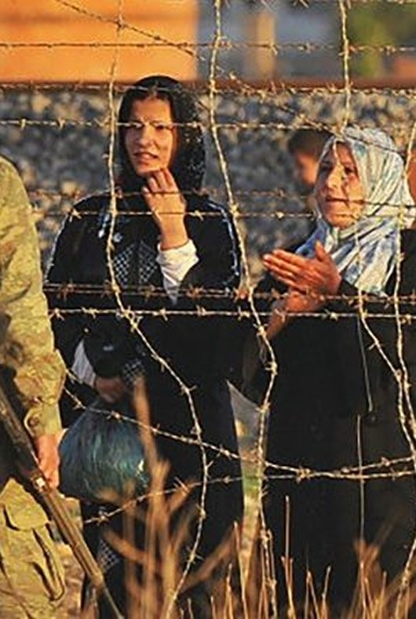
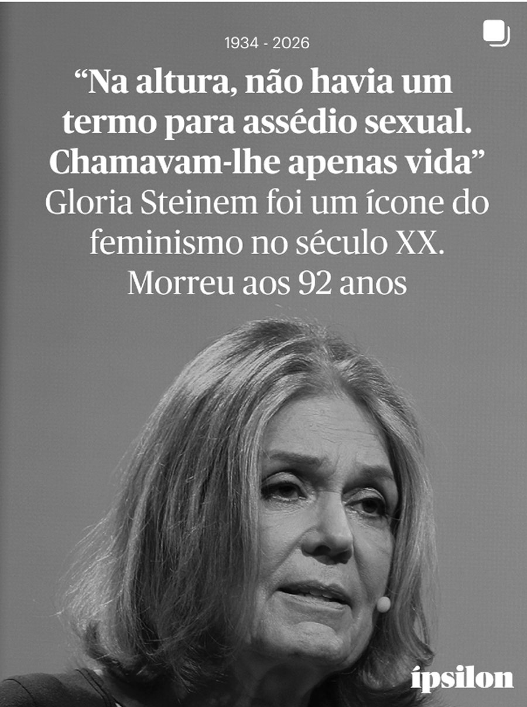
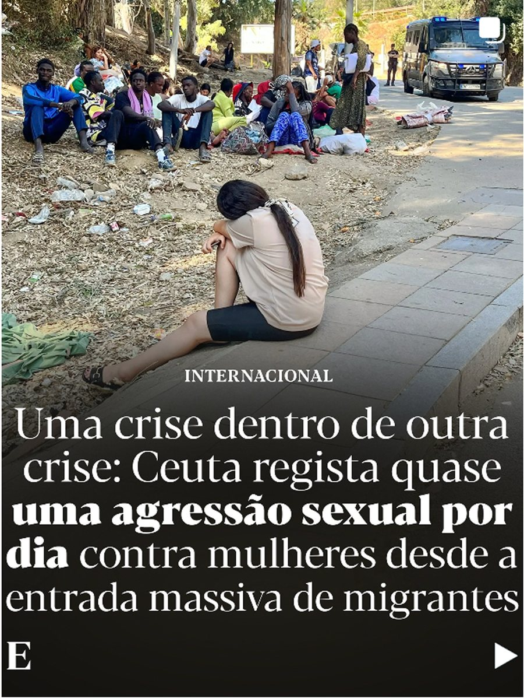

Direitos LGBTQIAPN+
Notícias

Justiça social
Numa declaração com 15 países: Portugal admite reconhecer Estado da Palestina
ler notíciaJustiça social
Portugal aprova lei que proíbe uso de burca em locais públicos
ler notíciaO que dizem sobre nós?
@sicnoticias
A Amnistia Internacional – Portugal lança a campanha “A Última Manifestação?” para afirmar o seu compromisso com os direitos humanos…

@ipsilon
A Amnistia Internacional – Portugal lança a campanha “A Última Manifestação?” para afirmar o seu compromisso com os direitos humanos…

@expresso
A Amnistia Internacional – Portugal lança a campanha “A Última Manifestação?” para afirmar o seu compromisso com os direitos humanos…